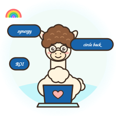
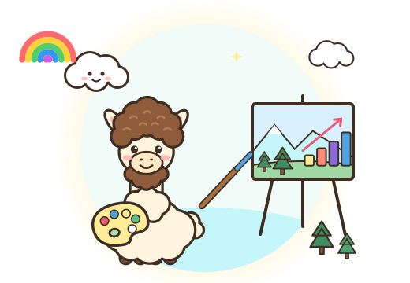
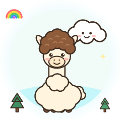
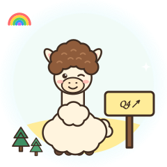
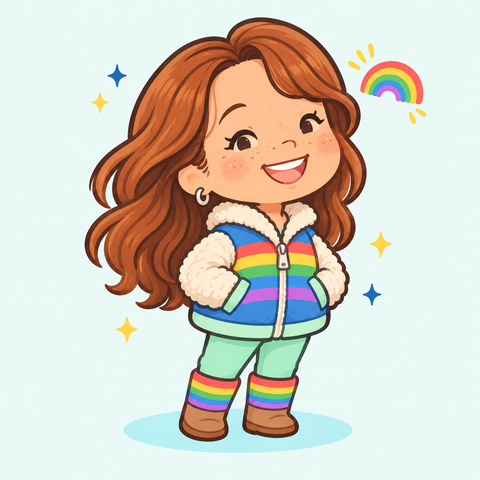
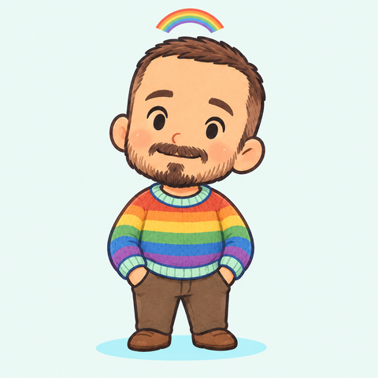
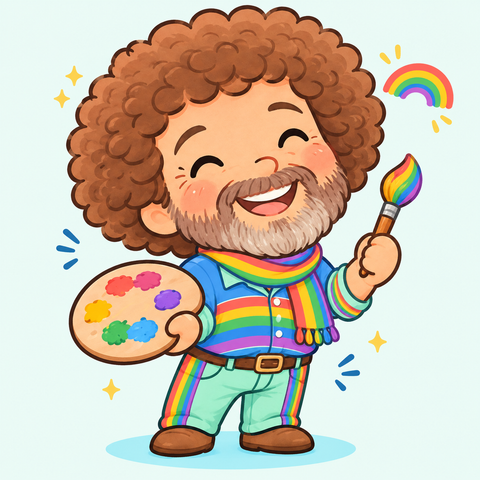
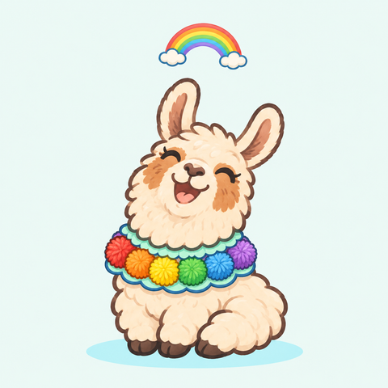

Synergy Studio
Ideate, align, and circle back in one omnichannel canvas. Surface low-hanging fruit before it becomes a fire drill, and let every stakeholder feel heard. Everybody needs a friend.
Docking no token: self-hosted head, no inline init · QA
Llamalytics helps forward-leaning revenue teams operationalize their north-star synergies at scale. Because there are no mistakes in your funnel, only happy little accidents waiting to be reframed as learnings.
No credit card. No silos. Just a happy little cloud.

Trusted by best-in-class herds at
Platform

Ideate, align, and circle back in one omnichannel canvas. Surface low-hanging fruit before it becomes a fire drill, and let every stakeholder feel heard. Everybody needs a friend.

A serverless, zero-trust, best-of-breed grazing layer that scales elastically with your herd. Let's build a happy little cloud. Let's build some happy little infrastructure-as-code.

Socialize your Q4 priorities, boil only the oceans that matter, and timebox the rest. You can do anything you want to do. This is your world, and these are your OKRs.
How it works
Onboard your data lake with a single click. We'll take it offline, deep-dive the learnings, and bring back an actionable framework. Talent is a pursued interest; so is data hygiene.
Our proprietary engine ladders up every touchpoint into a single pane of glass. There's nothing wrong with having a tree as a friend, or a dashboard as a friend.
Shake off the blockers, pivot where you need to, and ship. Value-add accrues on a go-forward basis, net of synergies. Then sign the painting: you earned it.
"We don't make mistakes. We just have happy accidents. And then we put them in the retro."
Leadership
A cross-functional, high-trust team of thought leaders who believe every pipeline deserves a happy little horizon.

Chief Synergy Officer
Turns blockers into building blocks. Believes in bold color and bolder OKRs.

VP, Strategic Alignment
Has never met a stakeholder map that couldn't use one more happy little arrow.
Head of Celebrations & Velocity
Ships on Fridays. Brings cupcakes on Fridays. Correlation is not causation, but it helps.
Director of Customer Delight
Closes the loop, then closes another one. Every customer is a friend you haven't onboarded yet.

Founder & Chief Happy Accidents Officer
Founded Llamalytics with two brushes and a dream. Still mixes every brand color by hand.

Chief Llama Officer
Owns morale, mascot duties and the snack budget. Reports directly to the board, and to nobody.
From the Pasture Blog
At the end of the day, it is what it is: a paradigm shift in how herds go to market. We leverage cross-pollinated insights to drive mission-critical outcomes, and we do it with soft, fluffy brushstrokes. Let's get crazy. Let's move the goalposts closer, on purpose, so we can celebrate sooner.
Our north star is simple: holistically incentivize turnkey deliverables while keeping the canvas open-ended. When a workstream gets stuck, we don't escalate; we take a step back, add a little bit of Titanium White, and reframe the narrative. Sometimes the best thing you can do for a roadmap is let it dry overnight.
We believe in radical candor, radical transparency, and radically happy little trees. Every tree needs a friend, so we pair every initiative with a best-in-class co-owner and a lightweight RACI. You'll know who's accountable, who's consulted, and who's just here for the cupcakes.
Bandwidth is a renewable resource if you socialize it early. We right-size every sprint, de-risk every launch, and leave just enough whitespace for a happy accident to become a feature. Then we document it in the wiki, which, like a mountain, is majestic and rarely visited.
Finally, we measure what matters. Not vanity metrics, but vanity-adjacent metrics with a clear line of sight to revenue. Our dashboards are painted wet-on-wet, refreshed in real time, and signed in the bottom corner. Because this is your world, and you're the creator.
Pricing
$0/month
Most aligned
$49/llama/month
Let's talk
Book 30 minutes with our herd. We'll bring the brushes; you bring the blockers.
Start Your Free Trial